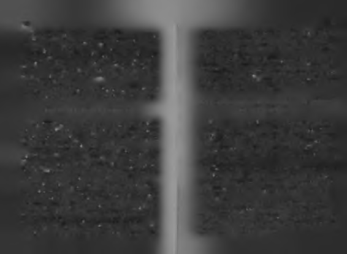
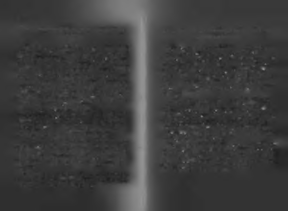
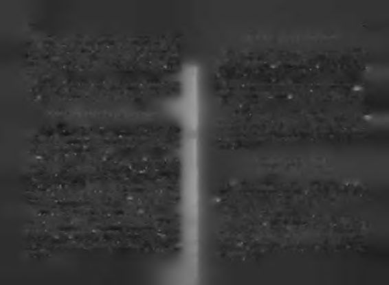
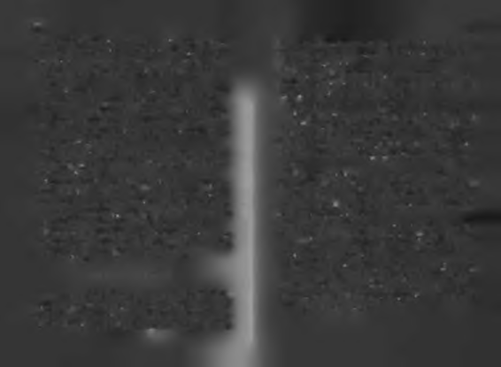

Henüz lise öğrencisiyken en yakın arkadaşıyla güzellik
salonu açtılar fakat sonuç tam anlamıyla fiyaskoydu! Salona
@
girenlerin güzelleşmek yerine çirkinleşmesi ve hatta bir kadının saçlarının yanmasıyla, bu macera son buldu. Umudunun kanatları biraz daha kırpılmıştı!
Ona da "S e n d e n ne köy olur ne de k a s a b a " dediler!
ÖNCE KENDİ KANATLARINA GÜVEN: SÜREKLİ
Durmaya niyeti yoktu. Yenilmişti ama pes etmemişti! Yoluna devam etti.
KANATLARI KIRPILAN RİR MİNİK SERÇENİN
16 yaşında bir ses yarışmasına katılmak için, cebindeki
HİKÂYESİDİR!
son parayla İstanbul'a kaçtı. Akşam kalacak yeri de, otel parası da yoktu. Bindiği taksinin babacan şoförü haline acıyıp onu kendi evine götürdü. Ailesi ve çocuklarıyla tanıştırdı, sabah da onu yarışmaya götürdü. Yarışmada ancak altıncı ola
Denizli'nin Sarayköy'ünde dereye nazır bir köy evinde
bildi...
doğdu. Adını "Fatma" koydular.
Birinci olamamıştı ama cesareti daha da artmıştı. Hemen
Şalvarlı bir hayattan, İzmir'e göç edince mini eteğe geçti.
büyük prodüksiyonlara imza atan bir yapımcıya gitti, fakat
İçinde sanatçı ruhu, çevresinde bir "memur" ailesi vardı. Yaondan " Senden ne köy olur ne de kasaba" cevabını aldı. Umu
şadığı küçük boy hayat ruhuna dar geliyordu. Çocuk yaşta
dunun kanatları bir kez daha kırpılmıştı.
birçok kez evden kaçtı, hatta intihara kalkıştı. Kafası kafese
Müziği çok istemesine rağmen, ailesinin yönlendirmesığmayan çocuklardandı o. Lakabı “cüce bela" ydı!
siyle mecburen Ziraat Fakültesi'ne kaydoldu. Günleri kan14 yaşında onu anlayan, ona şefkat kapılarını sonuna katinde şarkı söyleyerek geçiyordu. 2 yıl sonra da okulu bıdar açan tek insan olan anneannesini kaybetti. Koca dünyaraktı.
da kendi başına kalmıştı. Hayat, umudunun kanatlarını
20 yaşındayken bir müzisyenle evlendi ama çok geçmekır(p)mıştı!
den ayrıldılar. Bu aşkın "adı onda saklı hikâyesi" yıllar son
Kendi başının çaresine bakmaya karar verdi. Kendi kanatra çok beğenilen bir şarkı olsa da, hayat umudunun kanatlalarıyla uçmak için, önce ekonomik olarak bağımsız olmalıyrı kırpmaya devam ediyordu.
dı. İş hayatına atılacaktı!
21 yaşında ilk 45'liğini çıkardı. Adını da "Haydi Şansım"
koymuştu. Bu defa çok büyük umutlarla kanat açmıştı. Artık ha
36
37
yaline ulaşıyor gibiydi. Sonuç, beklediği başarının aksine,
Ama o yılmadı. Her şeye rağmen, kanada kuvvet yola devam
hüsrandı. İlk 45'liği sadece 50 adet sattı!
etti. O minik serçenin öyle kanatları vardı ki, her kırpılma
Çoğunu kendisi ve arkadaşları almıştı. Bir kez daha hayat
sında, kendi kendini büyütebiliyordu. Onun umudunun kök
kanatlarını kır(p)mıştı!
leri kendindeydi, ruhunun derinliklerindeydi, uçları kırpılsa da
köklerinden besleniyordu. Umut kırpıcılar köklerine ulaşamı-
İ n i l kurşun işlemez giiliim...
yorlardı.
Nazım Hikmet'in bir dizesindeki gibiydi yaşananlar:
Bir şekilde kendini göstermesi gerekiyordu. 25 yaşında ilk
"Umuda bin kurşun sıksa da ölüm, unutma umuda kurşun işlemez
film teklifini aldı. Kabul etti ama başrolünü oynadığı bu fil
gülüm!"
mi kendisi bile senelerce izleyemedi.
27 yaşında ikinci kez dünya evine girdi. Bir oğlu oldu ama
B a ş a r ı gül bahçeli cennet vaadi de ğ ild ir.
bu evliliği de boşanmayla bitti.
Uça düşe ilerliyordu. İstediği sonuçları alamasa da, azimle üret
Zamanla uça düşe kendini olmak istediği yere taşıdı. Sa~
meye devam ediyordu, ikinci 45'liğini çıkardı. Üçüncüsünü çımuel Beckett'in o ünlü, "Hep denedin, hep yenildin; olsun gene kardı. Sonunda Kaybolan Yıllar albümü ile ilk ciddi başarısını
dene, gene yenil, ama daha iyi yenil!" öğüdünü dinlemiş gibiygösterdi. Artık herkes onu konuşmaya başlamıştı.
di. Başardıkça büyüdü, büyüdükçe milyonlarca insanın kal
Başarının tadını almıştı bir kere. Olduğu yerde durmaya
bine kaydetti şarkılarını. İlk yarışmada birinci seçilememişti
hiç niyeti yoktu. Hedef büyüttü, Avrupa'ya açılacaktı.
ama defalarca "yılın kadın sanatçısı" seçildi. Albümleri mil29 yaşında Eurovision şarkı yarışması için kolları sıvadı.
yonlarca sattı. Pop müziğin baş+arı kraliçesi oldu.
Herkesin ondan birincilik beklediği gecede, o da çok umut
Zirveye çıkınca, belanın ulaşamadığı yere mi gelmişti? Ba
luydu ama sonuç hiç de iç açıcı değildi. Bir kez daha hayat
şarı gül bahçeli cennet vaadi değildir. Zirvede de zorluklara ka
kanatlarını kırpmıştı!
nat germeye devam etmesi gerekecekti. Bu bazen en yakın
Aynı yarışı yıllar sonra tekrar denedi, sonuç gene başarıdostunu kaybetmek, bazen sesini kaybedebileceği hastalıksızlıktı. Başarı ile başarısızlığı; kazanma ile kaybetmeyi bir larla mücadele etmek, bazen tabuları salladığı için yargılaarada yaşıyordu. Hayat ona sıcak-soğuk yapıyordu;5 başından nan ve yadırganan biri olmaktı.
aşağı aynı anda hem sıcak hem soğuk su döküyordu!
Bir minik serçenin kendi hayallerine uçma hikayesiydi okuduk
Özel televizyonların olmadığı dönemlerde artık ülkesin
larınız. "Cüce bela" Fatma Sezen Yıldırım olarak başlayıp,
de başarı elde etmiş olmasına rağmen TRT denetiminden geaşk ve anlam dolu şarkıların kadını Sezen Aksu olarak de
çemediği için televizyonlarda şarkılarını uzun süre seslendi-
vam eden bir hikâye. Başına gelenleri içinde öğütüp 450'den
remedi. TRT de kanatlarım kırpmıştı!
fazla şarkı yapan bir aşk provokatörünün hikâyesi.

38
39
O belki "iyi bir evlat" olamadı, "ilişkilerini başarıyla yürüten
peşinden giderken çevrenizdeki ortalama insanların sizi ken
bir eş" olamadı, "diploma mesleğini yapan bir ziraatçi" olamadı,
dilerine benzetmelerine ne kadar direnebilirseniz, sıradışı iş
"kurduğu güzellik salonunu kârlılıkla işleten bir iş kadını" olama
ler başarabilme potansiyelinizin o kadar yüksek olacağını
dı, "girdiği yarışmada birinci çıkan yetenek" olamadı, "ilk albü
vurgulamaya çalışıyorum.
müyle patlayan star" olamadı, "devlet televizyonun resmi sanatçı
Başarı hakkında doğru bildiğimiz yanlışları ve yanlış bil
sı olamadı. Peki ne oldu? Sezen Aksu oldu! Ne dersiniz, hepdiğimiz doğruları gözden geçirmeliyiz. Bu konudaki tüm ezsine yetmez mi? Diğerlerini olabilenlerin Sezen Aksu olamaberlerimizi bir kalemde silmek mümkün görünmüyor ama ması da ilginç değil mi?
aklımızı yeniden kurmak ve ön yargılarımızı sorgulamak
Sezen Aksu denedi ve başardı, bize de derslerini çıkarmak
için birkaç fikirle işe başlayabiliriz.
düştü! İşte Sezen usulü başarıdan çıkarılabilecek o dersler:
Hiç hata yapm adığım ızda değ il, y a n lış la r ım ız d o ğ ru la rım ız ı götürdüğünde
Biiyiik bir hayata düm düz bir m antıkla g id ilm iyo r!
kalan k a d a r ba şa rılı s a y ı lı r ız .
Eğer küçük ve orta boy hayattan sıkıldıysanız, büyük boy
Yatırım dünyasında risk toleransı diye bir kavram vardır.
hayat yaşamak ya da hayatınızı birkaç beden büyütmek isti100 bin doları olan biri bankaya gidip, "Param ı %100 artırayorsanız, sizinle başarıya ve hayata dair ön kabulleriniz cak, %100 kaybettirecek riski alıyorum" derse, oııun bu terci
("default"larmız!) üzerine biraz konuşmalıyız!
hine göre oluşturulacak yatırım politikasıyla büyük kazana
Büyük bir hayata giden yol dümdüz, hatasız, pişmanlıksız değil;
bilir de büyük kaybedebilir de. Büyük risk almak her zaman kazanmak anlamına gelmez, kazanmak ya da kaybetmek risk aldıktan asimetrik, dalgalı, karmaşıktır. Büyük bir hayat çevredekilerin
sonra yapılanlara bağlıdır.
aynısını yaparak gidilen bir yer değildir. Çoğu kez çevreye ka
Risk alma oranı, kazanma ve kaybetme kapasitesini belirler.
fa tutarak, aklına koyduğu için alay edilmeyi göze alarak,
Hiç kaybetmeden -sıfır risk toleransı- kazanmak isteyen,
zekâsını alışılmışın dışında çalıştırarak ulaşılan bir yerdir.
sadece banka faizi gibi sabit getirili yatırım araçlarını kulla
Büyük boy hayat isteyen, alanında ülke çapında ilk üçte
nır. Büyük kazanamaz ama sistem riskini saymazsak, kayolmayı akima koymuş birisi için, içinden gelen ses çevresinbetmez de.
den duyduklarından genellikle daha iyi bir rehberdir. İçgü
Aynı durum hayat için de geçerlidir. Kazanma ve kaybetdülerinin sesini dinleyen başarılı da olabilir başarısız da ama me potansiyeliniz risk toleransınız kadardır. Çoğu insan hasırf çevrenin aklıyla gidenlerin fazla ileri gidemeyeceği keta yapma korkusuyla, doğru bir şey de yapamaz! Oysa hata sindir! Üçüncü bir yol, bilene danışıp bildiğini işlemektir!
yapma toleransı ve yeniden deneme cesareti, diz kanatan dü
Size ne kadar "aykırı" olursanız o kadar başarılı olacağı
şüşleri başarılı uçuşlara çevirebilir.
nızı kanıtlamaya çalışmıyorum. Başarmak istediğiniz şeyin
40
Ben hayatta çoğu hatanın boşa gitmediğine inananlardamağluptur, her mağlup başka bir boyutta galiptir. Büyük banım. insanlar doğruları kadar bazen yanlışlarıyla da bir yer
şarı vardır ama kusursuz başarı yoktur. Her başarılı hayat,
lere gelirler. Bir işadamının ofisinde şu söz yazıyordu: " Bana
içinde eksikleri ve kusurları da barındırır.
hayatında hiç hata yapmamış birini göster, sana onun on katı hata
yapıp daha başarılı olmuş başka birini göstereyim!"
B a ş a r ıs ız lık , ba şa rının geçm işinde durdukça g ü ze lle ş ir!
O halde nasıl düşünmeliyiz? Hayat okulunda bazen bir
yanlış bir doğruyu, bazen bir doğru bir yanlışı götürür. Bazı
Başansızlık+başarısızlık+başansızlık+başarı=Başarı!
güçlü doğrular, çok sayıda ortalama yanlışı, bazı güçlü yan
Başarı-başarısızlık-başarısızlık-başarısızlık= Başarısızlık!
lışlar çok sayıda ortalama doğruyu götürür. Büyük doğrula
Başarının matematiğinde önemli olan kaç kez başarılı ya da ba
rın küçük yanlışları, büyük yanlışların küçük doğruları gö
şarısız olduğunuz değil, hangi sırayla başarılı ya da başarısız oldu-
türmesinden sonra kalan bakiye başarı ya da başarısızlıktır.
ğunuzdur. Üç kez başarısız olduktan sonra dördüncüde başa
Sadece ölmek tüm cari hesabı kapatır!
rılı olan, hem başarılı sayılır hem de daha önceki başarısız
denemelerinde yılmadığı için başarısı "karizmatik" görünür.
H e r biiyiik b a ş a rı ö y k ü s ü , içinde çok sayıda k ü ç ü k , k ır ık b a ş a rıs ızlık İlk denemede başarıp, sonraki üç denemesinde başarısız
öyküsü b a r ı n d ı r ı r .
olan ise, sonuçta başarısız insan olarak algılanır. Başarı söz
konusu ise önemli olan, nasıl bitirdiğinizdir. Sayı değil, sıra
Başarı ile başarısızlık ayrı ayrı yaşar gibi görünür ama çoğu kez
lama her şeydir.
iç içe geçmiştir. Gülmenin en ileri noktasında gözümüzden
Başarısızlığın en güzel durduğu yer, sonu başarıyla biten bir
yaş gelmesi, ağlamanın en ileri noktasında gülme krizine gir
ömrün baş tarafıdır. Başarısızlığın hayatınızda olması değil,
memiz gibi, başarısızlığın dibinde başarı, başarının tepesinonu durması için koyduğunuz yer önemlidir.
de başarısızlıkla karşılaşabiliriz.
Ömrün sonunda büyük bir başarı tablosu varsa, aralarda
Büyük bir başarı öyküsünün içinde küçük birkaç başarısızlık
yaşanan başarısızlıklar sevimlileşir, komikleşir, hatta başarı
öyküsü bulunabilir. Başarı ile başarısızlık bir insanın hayatınnın görkemini daha da artırır.
da art arda durabileceği gibi, aynı anda, yan yana da buluna
Hayat maçının sonunda sahadan galibiyetle ayrılıyor sabilir. Bazen, bir yanımız galipken, diğer yanımız mağlup hisnız, o maçta yediğiniz goller maçın keyfini ve galibiyetin deseder kendini. Bazı başarılarımızda bir şeyler kaybederiz, ba
ğerini daha da artırır. O halde bir gol yiyince ne yapmalı? Anın
zı başarısızlıklarımızdan bir şeyler kazanırız.
da birkaç golle misillemede bulunmalı! Başarısızlıkla karşılaş
Bazı başarıların sonunda başarısızlık sizi bekler, bazı bamak değil, onu başarıyla karşılamamak problem!
şarısızlıkların sonunda ise başarı. Her galip başka bir açıdan

42
B a ş a r ıs ız lık ya ş a n ırk e n başka tiirln , bir öm rün bütünü içinde başka
S ize uygun g ö rü le n le ri y a ş a y a r a k değ il, yapm ak için duyduğunuz şeyi
tü rlü g ö rü n ü r!
y a p a ra k b ü y ü ye b ilirs in iz!
Yaşadığımız her başarısızlıkta, sadece kendimize güveni
Hepimiz dünyaya bir işbölümünün parçası olmak için
miz azalmaz, başkalarmın bize inancı da azalır. Başkalarının bigeliyoruz. Yapmak için doğduğumuz şey, fabrika ayarları ze tekrar güvenmesini sağlamak, ki bu bize destek olmaları için
mızda kayıtlı oluyor. Sezen Aksu dünyaya şarkı söylemek
önemli bir noktadır, kendi yıkılan özgüvenimizi yeniden kaiçin gelmişti. İnsanlar yapmak için doğdukları şeyin ilk bezanmaktan daha zor olabilir. Çünkü biz kendimize güvenmek lirtilerini çocuk yaşlarda vermeye başlarlar. Sezen Aksu da
zorundayız ama başkaları bize güvenmek zorunda değildir!
bir röportajında, henüz 8 aylıkken (yazıyla; sekiz aylık
Birçoğumuz ilk başarısızlığında, kişinin kredi notunu düken!) hareketli bir şarkı duyduğunda annesinin yün yu
şürüp acımasızca başarısızlıkla damgalarız. Oysa o başarısızmaklarını alıp göğsüne yapıştırarak o halde dans ettiğini lık, kişinin kimliği değil son işindeki performansıdır. O anda
söylemişti!7
"başarısızlık" diye gördüğümüz şey, yarın devamına bir ba
Fabrika ayarlarımızda olanı yaşamadan, gerçekte kim olduğu
şarı eklenince birden anlamını değiştirir.
muzu tam bilemeyiz. Bir tohum nasıl içinde olanı dışarı göster
Bugün, Sezen Aksu'nun "başarısızlıklarını" okudukça onun
mek için sadakatle çabalıyorsa, biz de içimizde olanı dış dün
büyüklüğü gözümüzde daha da artıyor, peki ya o başarısızlıkları
yada gerçekleştirmek için aynı varoluşsal sadakati gösterme
yaşadığı o anda yanındaki bir arkadaşı olsaydık onun hakkında ne
liyiz. Neysek o olmalı ve büyümeliyiz büyüyebildiğimiz kadar. Ba
düşünürdük? Yaşadığı her başarısızlıktan sonra yine de ona
lık yumurtasıysak balık olmalıyız ve büyümeliyiz büyüyegüvenip, "Dene, başaracaksın!" diyebilir miydik?6
bildiğimiz kadar. Çınar tohumuysak, çınar olmalıyız, büyü
Şu anda çok başarısız olduğuna tanık olduğumuz bir arkadaşı
meliyiz büyüyebildiğimiz kadar.
mızın ileride başarılarla karşımıza çıkmayacağını nereden bilebili
Biz sadece kendi potansiyelimizde olanı gerçekleştirmek
riz? Şu anda en son yaptığı iş tutmadığı için "o artık bitti" diiçin geldik dünyaya. Başkalarına uymak için fabrika ayarlaye damgaladığımız bir ünlünün, gelecekte şaşırtıcı işler başarımızdan uzaklaşmamalıyız. Kartalsak kartal gibi yaşamalırıp, bugün kendisine böyle diyenlere gülmeyeceğini nereden yız, tavuksak tavuk gibi. Hayatta başarılı olmaktan daha üsbilebiliriz?
tün bir tek değer varsa o da kendi olabilmektir.
Unutmayın! Başarısızlık yaşandığı anda başka türlü, kişinin
başarıyla sürdüğü ömrün sonunda, o kişinin hayatı bir bütün olarak değerlendirildiğinde başka türlü görünür.
45
H a ya t ba zıla rın ı S ib irya lI a nn elerin yaptığı gibi, doğar doğm az buzlu
suya sokup ç ık a r ı r !
Bilirsiniz, çocuklar ailelerinin kanatları altında büyürler.
Hayatı önce korunaklı bölgelerde öğrenirler. Kanat altında kanat çırparak ilk uçma denemelerini yaparlar. Özellikle erkek çocuklar babalarının gücünü kendi gücü gibi görür, yan yana yürürken babalarının topukları altında'ezilen çakılların çı
KENDİ KA1UĞUNÜ KIRMAK:
kardığı sesi bile kendi güçlerinin göstergesi sanırlar.
KAFESİN İÇİNDEN ÇIKMAK YETMEZ, KAFESİ DE
Üzeri kanatsız bölgede doğanların böyle bir şansı yoktur.
Yüzme bilmeden denize atılmışlardır. Doğduklarında kulak
KAFASININ İÇİNDEN ÇIKARMALI İNSAN!
larına, "Ne olursa olsun, başarmaya mecbursun," diye fısıldan-
mıştır. Mücadele içinde mücadele yaşar, katman katman sert kabuklar geliştirirler. Tüm bunlar onları ya başarı makinesine Bazıları hayata öyle gelir ki, ya büyük bir insan olur ya da
dönüştürür ya da bela m akinesine...
küçük bir hiç; onlar için hayatın ortası yoktur. Ya en büyük
Sibirya'da bir gelenek vardır, anneler çelik gibi sağlam olkazanan olurlar ya da en büyük kaybeden. En büyük yaratısunlar diye, çocuklarını henüz bebekken içi buzlu suyla docılar da en büyük yıkıcılar da bu yüreği yüklü insanlardan çılu göle sokup çıkarırlar. Hayat da bazı çocuklarına bu Sibirkar.
yalI anneler gibi davranır. Hayata gelir gelmez yaşanan bu
Bu kişiler hayata kendi kanatlarıyla uçmak zorunda kalacak şe
soğuk duş şoku bazılarının ruhunu daha da sertleştirir, bazı
kilde gelmişlerdir. Onlar daha çok alkış almak için değil, halarının ise ruhunu buruşturur.
yatta kalmak için başarmak zorundadır. Onlar için kendi kanatlarıyla uçmak bir seçim değil, mecburiyettir.
Bazıları için başarm ak, hayattan intikam alm aktır.
Ben de doğuştan kendi kanatlarıyla uçmak zorunda kalanlardanım. Henüz bir buçuk yaşımdayken, babam 125
SibiryalI çocukların bazıları hayatın yaptığı kariyer planıuyku hapı içip intihar edince, doğar doğmaz unvan maçım na sitem edip arabesk söylenmelere sığınırken, bazıları güçbaşladı. Benim için de artık başarı bir seçim değil, mecburilü bir başarı yemini eder. İki tavır da benzer yaşanmışlıklaryetti.
dan beslenmiştir. Bazıları, "Kaderim se çekerim ," der, bazıları, "Hayat seni bu yaptığına pişman ederim !"
46
47
Hayatın başkalarını kayırıp kendisine haksızlık yaptığı
Kendi kanatlarıyla uçmak, bazen meydan okumaktır. Sunı düşünerek başarı yemini edenler için başarının anlamı yun boy aşan derinliklerine doğru yürümektir. Hayatın ve
biraz farklıdır. Onlar için başarmak, hayattan intikam aldiğer insanların ona tanıdığı sınırları yeniden çizmektir.
maktır. Haksızlığın karşısına başarıyı koymaktır. Her başa
Bazen yaşanılan kanatların altında sıkılmaktan, bazen
rı kötü kadere karşı bir misillemedir. Kader karşısında kaydaha ötesini meraktan, kendini bildiğinin ötesine atmaktır.
makam görmüş köylü gibi boynu eğik durmayı reddeden
Dışarıdan destek almasa da daha ileri gitmektir. Gözü geçlerdir onlar.
mişin dikiz aynasında kalmadan, ileriye uçmaktır. Kendine
Bu çocuklar bilirler ki kötü kaderlerini yenmek için elleyeni bir hayat kurmak için, eskiyi terk etmeyi becerebil-rindeki tek araç başarıdır. Bu yüzden, "Benim sadık yarim
mektir.
kariyerimdir," derler. Başarıya dört elle sarılırlar.
Yaşadığı yerden sıkılınca, içinde ilerleme isteği kabarın
Sığınacakları bir kanat altı bulamamalarının en büyük yaca, yeterince patinaj yaptığını düşününce insan kendi kararı, kendi kanatlarını kullanabilmeyi genç yaşta öğrenmelenatlarıyla uçmak ister. Kendi kanatlarıyla uçmak bazen bir ri olmuştur. Bu insanlar için başarı becerileriyle donanmak,
kaçıştır, bazen bir arayış, bazen seçilmiş bir hedefe varış çakendi ayakları üzerinde durmak, kendi kendine yetebilmek, bası.
kendi kanatlarıyla uçabilmek çok önemlidir.
Her insanın içinde kendi kanatlarıyla uçma tutkusu az ya
Bu kitabı aldığınıza göre sizler de kendi kanatlarınızla uçda çok vardır. Bu potansiyelimizi çoğu zaman başımıza gelen mak, başkalarının eline bakmadan kendi ayaklarınız üzerinolaylar harekete geçirir. Bazı insanlar üniversiteyi bitirince, de durmak, kimseye muhtaç olmadan yaşamak isteyenlerbazıları boşanınca, bazıları çalıştıkları yerden ayrılıp kendi densiniz. İsterseniz önce kendi kanatlarıyla uçmanın anlamı
işini kurmaya karar verince, bazıları her şeyi bırakıp yurtdı-
üzerine biraz düşünelim.
şma gidince kendi kanatlarıyla uçmanın ne demek olduğunu
öğrenir.
Kendi ka n atlarıyla uçmak ne de m e ktir?
Kendi ka n a tla rıyla uçm ak ba zıla rına g ö re ö zg iir o lm a k , ba zılarına göre
Nedir kendi kanatlarıyla uçmanın anlamı?
özgün o lm a k, b a zıla rın a g öre ise adam ye r in e ko n m a k tır.
Kendi kanatlarıyla uçmak "ben artık kendi kendime yetebilirim" beyanıdır. "Kendimi kendi gücümle taşırım" iddi
Kendi kanatlarıyla uçmanın anlamı bazıları için özgür olasıdır. Bağımlılıktan kaçış, bağımsızlığa uçuştur. Korkuyla maktır. Kendi sınırlarını kendi çizebilmek, istemediğini sınır
gelen sadakatten ve koruyucu kanatların kısıtlayıcılığmdan
dışı edebilmektir. Özellikle gençler ve başkalarına bağımlı
kaçıştır. Güven ve konfor alanını gönüllü terk ediştir.
durumda olanlar için özgürlük anlamı baskındır.
48
49
Bazı insanlar için ise kendi kanatlarıyla uçmak kendi öz
Sonra bir gün kendisi gibi düşünen ve hareket eden az sayıda
günlüğünü koruyabilmektir. Toplumun ona uygun gördüğü
martı ile yolu kesişir. Özgün uçma denemelerinin sonunda istedi
kalıba uymayan ruhunu savunmaktır. Hazır hayat şablonla
ği uçuşları yapar. Kendi olma savaşını kazanmış, farklılığını koru
rının dışında kalıp, kendi biricikliğini yaşayabilmektir. Cum
yabilmiştir.
mings in dediği gibi: "Bütün gücüyle seni diğerlerinden
Kendi kanatlarıyla uçmak, bazıları için de özgür ya da özfarksız yapmaya çalışan bir dünyada, kendin olarak kalabilgün olmak değil "adam yerine konmak" anlamına gelir. Bu mek, dünyanın en zor savaşını vermek demektir. Bu savaş
grubun en büyük dileği, hayata tutunabilmek ve asgari insabir başladı mı, artık hiç bitmez."
ni önemi görmektir. Kendi kanatlarıyla Anadolu dan uçup
Bu bakış açısmı en iyi anlatan kitap Richard Bach'ın yazmış
İstanbul'a ilk defa konanların akimdan geçenler bu duruma
olduğu Martı dır. Bu kitapta Martı Jonathan Livingston'un
örnektir.
öyküsü üzerinden özgürlük ve özgünlük mücadelesi anlatılır.
İbrahim Tatlıses "Hülya" adlı filminde bu, adam yerine
Martı Jonathan Livingston, sadece yemek bulmak için uçma
konma özlemini çok güzel özetler: Çok büyüksün İstanbul...
nın anlamının olmadığını, daha iyisini yapabileceğini düşünür.
Kim bilir kimleri yuttun. Ama beni yutamayacaksın. Bir gün o kadar
Tabii diğer martılar onu yadırgar, onun saçma sapan işlerin pebüyüyeceğim ki, sen bile bana dar geleceksin. Hatta bir gün gelecek şinde olduğunu düşünürler. Bir martının kendini daha iyi, daha
bana “îbo" diyemeyeceksin, 'İbrahim bey" diye hitap edeceksin."
hızlı, daha yükseğe ve daha gösterişli uçmaya adamasının hiçbir
İster özgür, ister özgün, ister önemli olmak için uçulsun,
anlamının olmadığını söylerler ona. Hatta jonathan'ı dışlar, ya
değişmeyen şey bunları yapabilmek için kendini geliştirmek
şam alanlarından uzaklaştırırlar. Çünkü sürekli yeni şeyler dener
ve başarılı olmak gerektiğidir. Kendi kanatlarıyla uçmak ba
bu martı. Kimsenin düşünmediklerini düşünmeye, yapmadıkları
ğımsız olmak demektir. Bağımsızlık da başarılı insanların ay
nı yapmaya çalışır.
rıcalığıdır. Özgür ve özgün olmak istiyoruz, o halde başarılı
Jonathan da sıkılır bu durumdan. Diğer martılarla aynı dili ko
olmalıyız. Kimseye muhtaç olmak istemiyoruz o halde başa
nuşmadığını, yaşama farklı açılardan baktıklarını görür.
rılı olmalıyız.
Sonunda martı konseyi toplanır ve onun görüşlerini tartışırlar.
Sonunda onu sürgün etme kararı alırlar. Konseyin düşüncesi şu
Kendi k a n a tla rıy la uçmak b ir ya şa m t a r z ı d ı r .
dur: "Yaşam bizim için meçhuldür. Bilebildiğimiz tek şey bu dün-
yaya yemek ve olabildiğince çok yaşamak için geldiğimizdir." Jo-
Kendi kanatlarıyla uçmak kısa süreli bir taktik hareket de
nathan'ı aralarından kovarlar.
ğil; bir yaşam tarzı, bir tavır, bir duruştur. Ona uygun bir ha
Martı Jonathan bir süre sarp kayalıklar bölgesinde yalnız kalır.
yat felsefesi, inançlar, düşünceler, davranışlar ve alışkanlık
Yalnız kalsa da bildiği gibi yaşamaya, kendine özgü uçuş deneme
lar oluşturmak gerekir.
lerini yapmaya devam eder.
50
51
Nedir bu yaşam biçiminin özellikleri? Kendi kanatlarıyla
Karakteristik hareketler ise sizin başarı tarzınızı ortaya
uçmak, özgürlüğü ve kendi ayakları üzerinde durabilmeyi
koyan hareketlerdir. Kariyeriniz ile karakterinizi bütünleştiseçmektir. Her gün yeni bir şey öğrenmek, kendine eklemeren, içinizi yansıtan davranışlardır. Sizin en iyi yapabildiğiler yapmaktır. Yarın bugünden daha iyi bir yerde olmak için niz (ve mümkünse en iyi sizin yapabildiğiniz) hareketlerdir.
çabalamaktır. Elinden gelenin en iyisinin bir fazlasını yapma
Başarıya götüren yukarıdaki üç hareketin kendi arasında
ya çalışmaktır.
bir hiyerarşisi vardır. Önce temel hareketleri öğrenmek, son
Bilginin gücüne inanmak, düşünmeyi sevmek, kendi iç
ra artistik hareketlere geçmek gerekir. Cin olmadan adam
hallerini tanımak için çabalamaktır. Kendi en iyi versiyonu
çarpmak tehlikelidir! Artistik hareketleri de öğrendikten sonnu bulmaya çalışmaktır. Başarının insanın kendi ellerinde olra, artık kendi karakteristik tarzını oluşturmaya geçilmelidir.
duğuna inanmaya cesaret etmektir.
Ku şla r birlik te uçabilir ama h e rk e s kendi
Kendi ka n a tla rıyla uçma d e r s le r i ¡iç aşa m a lıdır.
k a n a tla rıyla kendini ta ş ır !
Kendi kanatlarıyla uçmak, temel hareketler, artistik hare
İnsanların kanatlara bakış açıları farklı farklıdır. Bazıları
ketler ve karakteristik hareketlerden oluşur. Temel hareketler,
başkalarının kanatları altına sığınarak yaşamayı sever, bazıyerden havalanmak, havada kalabilmek ve gerektiğinde yeları kendi kanatlarıyla uçmayı. Bazıları başkalarına kol kanat germeyi sever, bazıları başkalarının kanatlarını kırmayı.
re konabilmektir. Artistik hareketler, yapıldığında başkaları
İnsanlar bazen korkudan bazen sevgiden başkasının kanın hayranlığını kazandıran yetenek gösterileridir. Karakte
natları altında yaşarlar. İnsanlar bazen özgürlüğe düşkün
ristik hareketler ise, uçanın tarzını ve karakterini ortaya koyan,
lükten, bazen başarı tutkusundan kendi kanatlarıyla uçmayı
"ona özgü" hareketlerdir.
isterler. İnsanlar bazen şefkatten bazen güç gösterisinden
Bıı hareket biçimleri sosyal hayattaki başarı için de geçerlidir.
başkalarına kanat gererler. İnsanlar bazen içlerindeki kötü
Temel hareketler, bir işi veya mesleği en azından ortalamalükten, bazen yarış içinde kendilerini kaybettiklerinden başnın biraz üzerinde yapabilen, kimseye muhtaç olmadan kalarının kanatlarını kırarlar.
kendi ayakları üzerinde yaşayabilen, evi, işi, yeri belli biri
Kendi kanatlarıyla uçabilenlerin uçma nedenleri de, uçma şekil
olmaktır.
leri de farklı farklıdır. Bazıları kartallar gibi yüksekten ve tek başı
Artistik hareketler, yapıldığında insanları şaşırtan şeyler
na, bazıları ise kargalar gibi alçaktan ve sürüyle uçarlar. Nasıl bidir. Mesela gazetelere haber olmak, ödül almak, pahalı arabari olduğunuz, hangi tarzı tercih edeceğinizi belirler.
lar almak gibi. Bu tür şeyler insanın egosunu okşar ama aynı za
Kendi kanatlarıyla uçmak, bencillik ve aşırı bireysellik
manda hem hayranlık hem de kıskançlık enerjisini harekete geçirir.
şeklinde yorumlanmamalıdır.
52
53
Kendi ayakları üzerinde durabilen ama gerektiği zaman,
Kendi ka n a tla rıyla uçabilm enin ödülleri k a d a r bedelleri de v a r d ı r .
gerektiği kadar başkalarıyla da işbirliği yapabilen insan olmak mümkündür. Tıpkı kuşlar gibi; kuşlar birlikte uçabilir ama Kendi kanatlarıyla uçabilmenin ödülleri kadar bedelleri
herkes kendi kanatlarıyla kendini taşır!
de vardır. Özgürlüğü seçtiğiniz için her zaman ödüllendirilmeyi beklemeyin. Başkalarının kanatları altında, bağımlı bir kö
Kendi k a n a tla rıy la uçmanın en biiyük ödülü ne dir?
le olduğunuzda, özgür, güçlü ve mutlu olmazsınız ama güvende ve
sahip çıkılan biri olursunuz. Efendiler kölelerini korur, onlara
Kendi kanatlarıyla uçmanın en büyük ödülü, kimseye
sahip çıkar, onları besler, çünkü onlardan çıkarları vardır.
muhtaç olmadan, özgür, özgün ve önem verilen biri olarak
Eğer başka kanatların altında yaşayacaksanız itaatkârlık, sayaşayabilmektir. Kendi kanatlarıyla uçabilenlerden olduğudakat ve kanaatkârlık size düşen görevlerdir.
nu bilmek, başlı başına bir ödüldür. Kimseye yük olmadan,
Kendi kanatlarınızla uçtuğunuzda, tutsaklık halini, etinkendi başına kendini taşıyabilmek bir onur ve mutluluk neden, sütünden, tüyünden yararlanılan olmayı reddediyorsudenidir. Başkasının eline bakmadan, kimseye onursuzluk denuz demektir. Bu da yetmez, kafesten çıkarak o kafesteki direcesinde katlanmadan, çaresizlikler içinde sızlanmadan, ğer tutsaklara da esaretlerini hatırlatmanız kaçınılmazdır.
Bilmelisiniz ki; bir kölenin özgürlüğüne kavuşması, efendilerden
kendi istediği yoldan, içinden geldiği kadar yürümekten daha güzel ne olabilir ki?
çok diğer köleleri incitir.
Bu yüzden ilk uçuşunuzda bazı insanlar içten içe başarıinsan kendi kanatlarıyla ilk uçuşlarını başarıyla tamamlasız olmanızı isteyerek sizi izler. Hatta bu insanlar sahte destek dığında neler hisseder? "Ben de yapabildim" keyfi anlatıl
gösterilerinde bile bulunabilir. Bir kafesten özgürleştirip, başmaz, yaşanır! Artık kendi kendine yetebildiğini gören kişi, ka bir kafese tıkmaya çalışanlar da olacaktır.
kendisinden sıkı bir iç alkış alır. Bu da kişinin özgüveninin
Kendi kanatlarıyla uçmak demek, bağımsızlık ilanı deartmasına katkıda bulunur. Kişi kendisiyle gurur duymaya mektir. Bağımsızlık, Goethe'nin deyişiyle her gün hak edilmesi
başlar. Gözünün feri canlanır.
gereken bir şeydir. Bağımsızlık bedel ister. Nedir bu bedeller?
Kendi hayatından sorumlu olmak, o kişiyi disipline eder.
Daha akıllı olmak ve zekânızı en üst seviyede kullanmak zo
Kişinin kendisi ve başkaları üzerindeki gücü ve kontrolü gerunda kalacaksınız. Sorumluluk bilinciniz ve kendinizi yölişir. Kendisine egemen oldukça, çevresine de egemen olmanetme becerileriniz çok önemli hale gelecek. Çoğu işinizi ya başlar. Çoğu durumda diğer insanlara liderlik etmeye
kendiniz görmek, işinizi her zaman diğerlerinden iki kat dabaşlar.
ha iyi yapmak zorunda kalacaksınız. Ekonomik yönden kendinizi güçlendirmeniz, hesabınızı bilmeniz gerekecek.
54
55
Psikolojik yönden de kendinizi beslemelisiniz. Zor za
Bazen öyle bir an gelir ki, kendi kanatlarıyla uçmanın bedelini bir
manlarınızda kendinize dayanarak güçlü duracaksınız. Ço
dönem için ödemeyen insanlar, kendi kafeslerinde kalmanın bedeli
ğu zaman kendi başınıza kendi yaralarınızı saracaksınız. Kıs
ni bir ömür boyu öderler. Gitmek zamanı geldiğinde iyi düşünkanılacak, kurnazca oyunlara maruz kalacaksınız. Kendinimeli ama kararsız kalmamalı, ödenmesi gereken bedel varsa zin hem terapisti, hem öğretmeni, hem de yargıcı olacaksı
ödemeli, çekeceği acıları yiğitçe yaşamalı insan.
nız. Kendi kendine yetebilen, özgür, güçlü ve mutlu bir insan
Baş+arı k(u)rallarmı iyi tanımak gerekir. Baş+arı kraliçesi
olsanız da bazen kendinizi yalnız, öteki, azınlık hissedecekiki tür insanı (2-H) sevmez: Onu hak etmeyenler ve ona henüz siniz. Toplumun çoğunluğu başarısızlık dayanışması içinde
hazır olmayanlar. Başarısızsanız o geldiğinde hazır olmalı, bayaşarken, kendi gücüyle ayakta duran başarılı azınlıktan ola
şarılıysanız onunla olmayı her defasında hak etmelisiniz. O,
caksınız.
kendine çok değer veren bir kraliçedir, sadece işinin kralı
Tüm bunlara değer mi? Kendi kanatlarıyla uçmanın da
olanların onunla olmayı hak ettiğini düşünür.
kafeste esir kalmanın da bedelleri var. Kölelik de bedel öde
Kendi kanatlarıyla uçmaya kendini nasıl hazırlamalı insan?
tir, özgürlük de. Ben kendi kanatlarıyla uçabilmenin ödülü
Karar almak, bir şeyler yapmak zamanı geldiğinde önce içine dön
nün tüm bedellerine değeceğine inananlardanım. Ama size
meli, kendi içinde yürümeli, aynada gözlerinin içine bakmalı. Gide
kendi yargılarımı yüklemek istemem. Siz kendiniz için en
ceği yön için aklının ve kalbinin onayını almalı. Hem gece aklıyla,
doğru olana, isteklerinize ve fabrika ayarlarınıza göre kendi
hem gündüz aklıyla düşünmeli. Zihni bir tür "akış hali"nde çalış
niz karar vermelisiniz.
malı. Albümündeki çocukluk resimlerine bakmalı. Bol ağaçlı bir
Ben seçeneklerinizi tanımlarım, seçimlerin sonuçları üze
parkta, temiz hava alarak yürürken düşünmeli. Şehri tepeden gös
rine sizi aydınlatmaya çalışırım, son kararı size bırakırım. Bu
teren bir yerden yaşadığı şehri seyrederek düşünmeli. Hayata baş
hayat sizin. Engelleri aşacak olan da, ödülleri alacak olan da
ladığı yeri, o ana kadar geldiği yeri, gelecekte olmak istediği yeri
sizsiniz. Kendiniz için en doğru olanı siz seçebilirsiniz.
düşünmeli. îlk büyük başarısında kendisini sonuca götüren iç güç
Kendiniz için en doğrusunu seçemeyecek durumda olduğu
lerini davet etmeli, o ruhu tekrar çağırmak. Ve bilmeli ki; "Korku
nuzu düşünseniz dahi, seçim yapması,gereken sizsiniz. Ken
yetersiz hazırlıktan doğar, şans en hazırlıklıya yarar."
di kanatlarınızla uçmanızın birinci şartı, kendi kararlarınızı
alabilme cesaretinizi ve becerinizi ortaya koymanızdır.
T e st uçuşu: Kendi ka n a tla rıyla uçma p r u v a la r ı yapm ak!
Kendi ka n a tla rıyla uçm aya kendini nasıl h azırlam a lı insan?
Nerede uçma tutkusu varsa, orada düşme korkusu da
vardır. Korkuya karşı en iyi çözümü Napolyon bulmuştur:
Kendi kanatlarıyla uçma zamanı geldiğinde, bu kararı al
"Cesurlar hiç korkmayan değil, korkuya rağmen yapılması gereke
mak, kalkıp yapılması gerekeni yapabilmek çok önemlidir.
ni yapanlardır!" Yani, korksan da vazgeçme!
56
57
İçimizdeki korkuyu yönetmek için elimizdeki araçlardan biri de
fesini içinde taşır. Anılarında taşır. Bilinçaltında taşır. Uçağın
prova yapmaktır! Sanat ve spor dünyasında provalar, başarısızlık
kargo yükleridir bunlar.
ların tümünü önceden gizlice yaşayıp, başkalarının önüne başarılı
Tutsaklık içine sinmiştir bazılarının. Esaret bağımlılık
bir şekilde çıkabilmek için icat edilmiştir! Defalarca yapılan başayapmıştır. Eric Fromm "özgürlükten kaçış" teorisinde, insanrısız provadan sonra bir tiyatro başarılı bir şekilde sahneye ların aniden özgürleştirildiğinde özgürlükten ve kendi kakonur. Antrenmanlardaki defalarca başarısız denemeden rarlarından korkup hemen kendilerini esir edecek liderler
sonra başarılı dünya rekoru kırılır.
seçtiğini, Hitler örneği üzerinden anlatır.
Bu taktik kendi kanatlarıyla uçma korkusunu yenmek
Amerikalılar, " Maymunu ormanın içinden çıkarabilirsiniz
için de kullanılabilir. Test uçuşlarıyla "ya yapamazsam" kor
ama ormanı maymunun içinden çıkaramazsınız," der. Bir insanı
kusu yenilip başarı güveni geliştirilebilir. Sadece güven deyaşadığı çevreden çıkarabilirsiniz ama geçmişin izlerini için
ğil, kendi kanatlarıyla kendini taşımak için gereken ruhsal ve
den hemen sökemezsiniz. Köylüleri köylerinden çıkarabilirsifiziksel kaslar da bu antrenmanlarla güçlendirilir. Yapılması niz ama köylülüğü içlerinden o kadar kolay çıkaramazsınız.
gereken, önce en iyi şekilde hazırlanmak, sonra küçük adım
Geçmişin alışkanlıkları içlerinde gezinmeye devam eder.
larla başlayıp gittikçe hedef büyütmektir. İnsan kendi kanat
Başarısızlık bölgesinden başarı bölgesine kendi kanatlalarıyla uçmaya bir sporcu gibi kendini hazırlamalıdır. Kusurrıyla uçan insanlar genellikle kendilerini geçmişte başarısız-suz bir hazırlıktan sonra kişiyi ne bekler? Azimli şampiyon
laştıran bilgi, düşünce, alışkanlık ve gelenekleri de berabe
Mark Victor Hansen cevap veriyor: "Sen neye hazırsan, o da
rinde taşırlar. Bu kara bilgiler başarıya gidişte iç sabotajlara neden
senin için hazırdır!"
olur. Kişinin başarılarını içinden yıkacak muhalif düşünce tohumlarıdır bunlar.
Kalesin içinden çıkm ak y e tm e z , kalesi kafasının içinden ç ık a rm a yı da
Herkesin yükü kendine göre değişir. Yaygın yüklerden
bilmeli insan.
bazıları şunlardır:
Alt sınıf alınganlıkları, alt sınıf gurur ve kompleksleri,
Uçaklarda yolcu başına, sınırlı miktarda kargo yüklenmegizli beklentilerle yaşama eğilimi, imalı iletişim kurma kültüsine izin verilir. Uçaklar gibi, kendi kanatlarıyla uçan insanrü, arabesk düşünme ve söylenme alışkanlığı, aşırı derecede ların da kafasında taşıdığı psikolojik yükleri bulunur. Bu yükdin merkezli düşünme eğilimi, kurnazlık kültürü, taşralı talerin miktarı ve uçağa doğru yüklenmesi çok önemlidir. Hızlı vırlar, bağnazlık, eziklik, agresiflik... Tüm bunlarla donanmış halde başarının zirvesine çıkmak "züccaciye dükkânına yükselenler, içlerindeki bu "ağırlıklardan" kurtulmanın yolgirmiş boğa" durumuna düşürür insanı.
larını bulanlardır.
Peki ne yapmalı? Atabildiğini atmalı, atamadığını da
Bir kuşu kafesten çıkarmak, çoğu kez kafesi kuşun kafasından
aklın baş köşesinde değil, beynin arşiv odasında saklama-
çıkarmaktan daha kolaydır! Kafeste yaşamış her kuş, biraz ka

58
59
lı. Bu yüklerden bir kalemde kurtulamayacağını bilmeli,
Uçan s e r ç e , yatan ka rta lda n k ıs m e tlid ir!
sabırla yontmalı kendini. Kademe kademe kendini başarıya taşıyacak hale dönüştürmeli. Bir pergel gibi görmeli Bazı insanlar, o kadar çok başarı planı yaparlar ki, düşünkendini, bazı değişmezlerini koruyarak diğer şeyleri değişmekten, bir türlü eyleme geçemezler. Bu durum biraz tembel
tirmeli, bir ayağıyla sabit durup diğer ayağıyla yeni şeyler
likten kaynaklanıyormuş gibi görünse de, aslında gizli bir başarı
denemeli.
sızlık korkusundan da kaynaklanıyor olabilir.
Başarısızlık bölgesinden çıkarken, geçmişe dair yüklerden
Eyleme geçmediği sürece, başarısız sayılmayacağı için çotaşıyabileceği kadarını almalı yanına. Yeni şeyler öğrenebil
ğu kişi kendi içinde patinaj yapıp, başarılı ya da başarısız olmek için bildiklerinin bir kısmını unutmalı.
duğunu ona gösterecek son adımı atmaz. Son-uçla yüzleşmekten kaçıştır bu.
Kendinize bir bendi k a n ıtla r ıy la uçma p rn je si yapın!
Bu tür insanların planları, fikirleri çoktur ama skor tabelalarında bir şey yoktur. Oysa başarı için düşünmeyi ve Başarı, bir entelektüel tartışma konusu değil, eylem ödevidir.
planlamayı bir yerde bırakıp eyleme geçmek gerekir. Hayat
Başarı için düşünmeyi eylem, eylemi azim, azmi de sonuç taeylemi ödüllendirir. Atasözüdür; “Gezen tavşan yatan aslan
kip etmelidir. Düşünce ile eylemi bir araya getiren şey, somut
dan kısmetlidir!"
bir başarı projesine sahip olmaktır.
Kendi kanatlarıyla uçmak isteyen her insanın akimda
B azı ins a nla r yolunuzda durduğ u nda:
bir başarı projesi olmalıdır. Başarı projesi sayesinde gündelik
S e nin le , sen siz ya da sana rağ m e n !
hayatta karşılaşılan her durum, insan, fırsat, fikir o proje içinde
bir yerlere yerleştirilir. Bir başarı projesinin olması, hayat
Eğer bir hayaliniz varsa, bir grup insan size destek olur,
nehri üzerine baraj kurmak gibidir, önünüzden akan her
bir grup insan hayalinize kayıtsız kalır, bir grup insan ise si
şeyden bir şekilde yararlanmaya başlarsınız. Başarı projesi
ze engel olmaya çalışır. Bu sonuncu gruptan insanların bazıkendinize değil, işinize konsantre olmanızı sağlar.
larıyla savaşmanız gerekebilir.
Kafanızda başarıyla ilgili bir sürü fikir var ama hayatınız
Amerikan dolarının üzerinde bir kartal resmi vardır. Bu
da başarılı sonuçlar yoksa, yapmanız gereken şey kendinize
kartal hız, çeviklik ve özgürlüğü ifade eder. Kartalın bir kabir başarı projesi yapmak. Düşünün: Neyi yapmış olsaydınız, nadında zeytin dalı, diğerinde ok bulunur. Bunun anlamı,
kendinizi başarılı sayardınız? Mevcut yaşam şartlarınızda, dıştan
"Barışı severiz ama gerektiğinde savaşırız!"dır. Gariptir ama
hiçbir yardım olmadan neyi başarsaydınız, insanlar size hayranlıkhayatta barış içinde yaşamak için bile, savaşı kazanacak kadar güçla bakardı?
lü olmak gerekir!
60
61
Hayatta bazen kendinizi olduğunuzdan yukarıya taşıya
Ç o cu kla rın kendi k a n a lla rıyla uçma ka sla rın ı g e liş tirm e k
cak bir hayal kurarsınız. Tüm bunları düşünmekle yetinmeyip o hayaliniz için hazırlık yapar, onu projelendirir, onun Mevlâna'nm anlattığı bir doğan hikâyesi vardır. Padişaiçin harekete geçersiniz. Bu sürecin bir aşamasında işler gelir, hın doğanı bir gün saraydan kaçar. Yaşlı bir kadının evinin
bir insanın kabulüne/iznine takılır. O kişi yolunuzda durup
önüne konar. Kadın doğanı yakalayıp bir ipe bağlar. Kuşun
onay vermediği için ilerleyemezsiniz. Sussanız gönlünüz ra
önce kanatlarını, sonra tırnaklarını keser. Bir yandaıi da söyzı olmaz, söyleseniz sözünüz dinlenmez! Bir yandan onu kırlenir: "Seni çok bakımsız bırakmışlar, kanatların ve tırnakların mak, ona savaş açmak istemezsiniz ama diğer yandan da yo
uzamış!" Doğanın bakımını yapmak adına, onu uçamaz
avlana-
lunuzdan dönmeyi kendinize yediremezsiniz.
maz hale getirir.
Böyle bir durumda ne yapmalı? Kafa tutmadan kafayı dik
Pek çok ailenin çocuklarını korumak ve kollamak adına,
tutmayı nasıl başarmalı?
onları kendi kanatlarıyla uçamaz hale getirdiklerini gördük
Benim bu konudaki tavrım şudur: Seninle, sensiz ya da sa
çe bu hikâye aklıma geliyor.
na rağmen!
Çocukları kendi kanatlarıyla uçacak şekilde yetiştirmek
Bir hedefim varsa ve bu konuda biriyle birlikte hareket et
çok önemlidir. Pek çok anne-baba bağımsız ruhlu çocuklar
mem gerekiyorsa, o kişi de onay vermiyorsa, net ve anlaşılır
yetiştirmek yerine, kendine bağ(ım)lı çocuklar yetiştirmeyi
şekilde şunu söylerim:
tercih eder. Çünkü özgür ruhlu olmayan korkaklan kontrol
"Ben bir hedef belirledim. Bunu seninle yapabilirim, bir
etmek daha kolaydır.
likte başarırız. Bunu sensiz de yapabilirim. Daha da ötesi, sa
Bağımsız ruhlu ve özgür kişilikli, kendi kendine yetebina rağmen de yaparım. Seninle, sensiz ya da sana rağmen ben len, özgüvenli, kendi ayakları üzerinde durabilen ve kendi
bunu yayacağım. Bir süre sonra bu sonucu almış halimi görekararlarını alma cesaretine sahip çocuklar yetiştirmek için ne ceksin.
yapmalı? Onları bir gün siz hayatlarında olmayacakmışsınız gibi
Şimdi pozisyonunu seç, hangi safta olacaksın? Yanımda,
yetiştirmeli ve kendi kanatlarıyla uçma kaslarını geliştirmelisiniz.
karşımda ya da herhangi bir yerde!"
Bunun için de aşırı koruyucu olmayın, kendi işini kendi ba
Bu tavır herkeste her zaman işe yarar mı? Eğer ilişki değil
şına görmesini teşvik edin. Küçük yaştan itibaren, bırakın çoiş merkezli başarı tarzını seçmişseniz, bir işi ülkenizde yaşacuk kendisi giyinsin. Bırakın kendi yemeğini kendi yesin. Sayan herkesten daha iyi yapmaya azmetmişseniz, her geçen bırla kendi başına yapmasını bekleyin. Tabakları Kendisi tagün yeni şeyler öğreniyor ve kendinizi geliştiriyorsanız işe şısın. Kırdığı tabakları eğitim maliyetine yazın, hata maliyetine
yarayacaktır. Kafanızı dik tutabilmek için önce göğsünüzü kabardeğil. Tabii tüm bunlar temel hareketlerdir, ötesinde bir şey
tacak işler başarmalısınız.
ler de bulup yapmak gerekir.
62
63
Çocukların sadece hatalarını değil başarılarını da yakala
S ıra d a n b ir ailenin çocuğu o la ra k doğup
mak, başarılarını onların gözünden görebilmek de çok önems ıra d ışı iş le r b a şa rm a potansiyeli taşıyan lidir. Bir tabak taşımak sizin için bir "başarı" değeri taşıma
ç o c u k la r üze rin e b irk a ç sö z.
yabilir ama bunu ilk defa yapabilen bir çocuk için Nobel
ödülü kadar sevindiricidir.
Sıradışı işler başarma potansiyeline sahip çocukların bir
Çocukla ailesi arasındaki ilişki mesafesini doğru ayarla
çoğu sıradan ailelerin çocuğu olarak doğar. Bu çocukların
mak hayati önem taşır. Çocuğunuza kendi işini kendi başına gö
durumu beni çok ilgilendiriyor, çünkü en sıkı başarı öyküle
recek kadar uzak, size ihtiyaç duyduğunda yardım isteyebileceği
ri bunlardan çıkıyor. Bu çocuklar benim ruh kardeşim olarak
kadar yakın durmalısınız. Tıpkı bir alışveriş merkezine gittiğinizde mağaza görevlilerinin sizinle ilgilenirken durmasını isgördüğüm insanlar.
Az gelişmiş anne-babalar, fabrika ayarlarında açık ara üstediğiniz mesafe gibi; ihtiyaç duyduğunuzda sesinizi duyatünlükler olan bu çocuklarla ne yapacağını genellikle bilecak kadar yakında, size yapışıp elbiseleri incelerken sizi ramez. Bu kartal ruhlu çocuklar için tavuklara özgü yetiştirme hatsız etmeyecek kadar uzakta durmasını istersiniz sanırım!
programı uygularlar. Sıradışı ruhluları, sıradanlaştırma eğiti
İşadamı Bülent Eczacıbaşı bir röportajında başarılı çocuk
midir bu. Bu eğitimin eleştirisi bir yana, bu konudaki tavır
yetiştirmek için ne yapılması gerektiğini soran bir gazeteciye
üzerine birkaç şey anlatmak isterim.
çerçeveletip asılması gereken bir cevap vermişti: "Bu o kadar
Thesseus ya da İkarus ruhuna sahip bir çocuğu olan anne
çok şeye bağlı ki... En üst düzeyde eğitimin önemine inanmak ama
lerin en büyük ikilemi şudur: Büyük adam olmak için doğmuş
diploma ile hiçbir şeyin bitmeyeceğini bilmek. Bir alanda uzman
çocuğum yakınımda ama küçük mü kalsın, uzaklara gidip büyük''
laşmak ama genel kültür sahibi olmanın önemini de anlamak. Kenmü olsun?
dine güvenmek ama kendini başka insanlardan üstün görmemek.
Çocuğunuzun fabrika ayarlarında üstün savaşçılık var;
Azimli ve başarı için hırslı olmak ama şükretmesini ve yetinmesini
yanınızda kalırsa sıradan biri olarak bir ömür yaşayacak, sa
de bilmek. Yaptığı işi ciddiye almak ama kendini çok fazla ciddiye
vaşa giderse kahraman olacak ama ölecek. Hangisini seçerdi
almamak."8
niz?
Binlerce başarı öyküsünü inceledikten sonra şaşırarak
Truva filmindeki bir sahne aynen bu durumu anlatır:
gördüm ki, anneler hem en büyük başarı azmettiricisi hem
Achilles: Anne, bu gece (savaşa lçatılmaya) karar vereceğim.
de en büyük azim bozan! Çocuğuna kendi kanatlarıyla uç
Annesi: Larisa'da kalırsan, huzur bulursun. Kendine güzel bir
mayı en iyi şekilde öğretebilecek olanlar da, onun kendi ka
kadın bulursun. Oğulların ve kızların olur, onların da çocukları
natlarıyla uçma cesaretini kırıp kendine bağımlı hale getire
olur. Ve seni severler. Öldüğün zaman seni hatırlarlar. Ama ço
bilecek olanlar da onlar.
cukların ve sonra da onların çocukları öldüğünde adın unutulur.
64
Truva’ya gidersen şan senin olur. Zaferlerin hakkında binlerce yıl
hikâyeler yazarlar. Dünya adını hatırlar. Ama Truva'ya gidersen
bir daha evine dönmeyeceksin. Çünkü şanın, ölümünle el ele yürüyor. Ve seni bir daha göremeyeceğim."
Siz bu annenin yerinde olsaydınız hangi yolu seçerdiniz?
Benim tanıdığım ortalama Türk annesiyseniz, tabii ki çocuğunuzu
göndermezdiniz! Kendi anneme sordum, o da göndermeyece
ğini söyledi! Eminim, "Sağ olsun, benimle olsun, kalacaksa
küçük kalsın," derdiniz. Size haklısınız ya da haksızsınız di
UÇAKLARDAN YÜKSELME DERSLERİ:
yemem. Herkes kendi yaşam değerlerine göre davranır.
Sadece şunu bilmenizi isterim: Çocuklar fabrika ayarlarında
KENDİ KANATLARIYLA UÇMANIN DOBAL
olanı yaşar. Eğer bir çocuk büyük adam olma geni ile doğmuşsa, ait
olduğu yere gider; sizinle, sizsiz ya da size rağmen! Olacak olanı
YASALARI NELERDİR?
geciktirebilirsiniz ama durduramazsınız. Erteleyebilirsiniz
ama engel olamazsınız. Onlar yaşamın dünyayı düzenleme
araçlarıdır.
Çocukken çoğumuz kendimize kanat takıp uçmanın ha
Arjantinliler, efsane futbolcu Maradona'ya "Diego" deryalini kurmuşuzdur. Tarihimizde bunu akimdan geçirmekle ler, yani "tanrının eli!" Nerede özel ruhlu bir çocuk varsa, orada
kalmayıp hayata da geçiren ilginç bir insan vardır.
tanrının özel bir planı var demektir. Sizinle, sizsiz ya da size
Kendine kanat takıp uçmayı deneyen ilk Türk II. yüzyılrağmen o plan gerçekleşir. Anne-baba olarak siz sadece safıda, Nişabuhda yaşayan Cevheri adlı bir bilgindir.
nızı seçebilirsiniz.
Gözü kara bir kaşif olan Cevheri, paraşüt gibi havayı için
Kendi içimizde yeterince zaman geçirdik, dilerseniz kitade tutarak hareket eden cisimler üzerinde yaptığı deneylerbın bu kısmında, iç seyahatimize bir süreliğine ara verip baden sonra, bir gün kendi yaptığı kanatları kollarına takıp şımızı göklere çevirelim. İç dünyamızdaki uçuşumuzu geçici ola
uçabileceğine inanır. İnanmakla da kalmaz bunu denemeye
rak bir yana bırakıp, içinde uçulan evrenin uçuş yasalarını, hava
karar verir!
Nişabur'un en eski camilerinden birinin minaresinden ka
da kanat açmanın doğal kanunlarını öğrenelim. Uçakların yüknatları takılı halde atlayacak, uçabildiği kadar ileri gidecekselmesi ile insanların yükselmesi arasındaki benzerlikleri tir. Olay halk arasında duyulunca kalabalık toplanmaya başkeşfedelim.
lar. Aralarında padişahın da bulunduğu ülkenin ileri gelenleri de seyretmek için oradadır.

66
67
Cevheri hayalinin karşısına hayatını koymuştur. Mina
En uzağı, en büyüğü, en iyiyi, en ağırı, en yukarıyı denemekreden atladığında uçmaya başlamazsa, düşmeye başlayatir. Tutkuyla istediği bir şey için bedel olarak hayatını ortaya caktır. Kanatlarını yanma alarak minareye çıkar. Kollarına
koymayı göze almaktır.
dikkatlice bağlar. Kalabalığa bakar. Acaba başarabilecek
İkarus olmak, bir ömür içinde bazen en üstü, bazen en dimidir?
bi görmektir. İkarus olmak "haddini" bilmemektir. İkarus'u
Herkes nefesini tutmuş beklemektedir. Son kontrollerini
efsane yapan da bu sınır tanımazlığıdır!
yapar, duasını eder ve minareden aşağıya bırakır kendini!
İkarus cesarete eğitimden daha fazla inananların kahramandır.
Bir sorun vardır. Kanatların havayı yoğunlaştırarak, (yel
İkarus olm ak bazen tutkuyu düz mantıktan daha üstte
paze gibi) kendisini havada tutacağını hesaplamıştır ama
tutmak, bir gün düşeceğini bile bile yükselmek, ne kadar
kollarının o yelpazeyi açıp kapamaya yetecek güçte olup olyukarı çıkarsa yere düştüğünde canının o kadar acıyacağımadığını dikkate almamıştır.
nı bile bile yine de yükselmek, daha yukarıya çıktıkça ka
Minareden atladıktan sonra, havada birkaç çırpınma hanatlarının yanacağını bilse de yükselmekten vazgeçmereketi ve yerde yatan ölü bir bilgin kalır geriye. Hayali uğrumektir.
na hayatını kaybeder.
İkarus, yükseklik korkusu nedir bilmeyenlerin ikonudur.
Cevheri gibi insanlar aldıkları sonuçlar için değil cesaret
İkarus olmak ortalama sağduyu standartlarına uymamak,
leri için alkışlanmalıdır. Onun hayalini hayata geçirme cesakendi sınırlarını kendi koymaktır. Daha önce gidilememiş bir reti en büyük başarısıydı. Sonunda ölüm de olsa, hiçbir tutnoktaya giderek insanlığın yapabildiklerinin limitini bir kulu çaba boşa gitmez. Cevheri de çalışmalarıyla asırlar sonadım daha ileriye taşımaktır.
ra Hezarfen Ahmet Çelebi'nin başarısına ilham verdi.
İkarus balmumundan yapılmış kanatlarla yükselmişti. İn
O, İkarus ruhlu biriydi. İmkânsızlıklar içinde yaşarken azsanlar ise akıldan yapılmış kanatlarla yükselirler. Aklın kamin gücüyle sıfırdan zirveye çıkmaya çalışan hemen her innatları güneşe yaklaştıkça erimez, aksine güneş ışığından sanın içinde az ya da çok İkarus ruhu bulunur.
uzaklaştıkça aklın gözü kararır.
Kitabın buraya kadarki kısımda İkarus ruhu ve Thesseus
İk a ru s ruhu ne d e m e k tir?
cesareti egemendi. Bundan sonraki kısımlarda ise Daidalos
tekniği daha ağırlıkta olacak. İkarus tutkusuna, Thesseus ce
İkarus olmak, yükselirken sınırları unutmaktır. Özgürlük
sareti ve Daidalos tekniğini ekleyince içinizde "başarı Voltra-
ve öğrenme coşkusuyla kendini kaybetmektir. Asla yapılanı" oluşturdunuz demektir!
maz denilen bir şeyi, ilk yapan olmak için kendini tehlikeye
atabilmektir. İkarus olmak, "en"lerin sınırlarında yaşamaktır.
68
D aidalos günüm üzde y a ş a s a yd ı kendi ka n a tla rıyla uçm ak is te y e n le re ,
hangi dnğa y a s a la rın ı izlem e le rini ü n e rir d i?
Çocukluğumda uçakların nasıl olup da o dev cüsselerine rağmen uçabildiğim çok merak ederdim. Benim kağıt
İTME KUVVETİ
tan uçaklarım iki metre gittikten sonra düşerken, dev çelik
YERÇEKİMİ KUVVETİ
kanatlılar nasıl oluyordu da iki şehir arasında uçabiliyordu?
Yıllar sonra uçakların nasıl uçtuğunun teknik açıklamasını öğrendiğimde, bunun bir insanın sıfırdan zirveye yükselmesi ile ne kadar da benzeştiğini görüp çok şaşırdım. Daidalos günümüzde yaşasaydı, bunu gençlere açıklardı diye düşündüm!
AŞAĞI ÇEKER
Oğlu İkarus'a balmumundan kanatları nasıl kul
Bu dört kuvvet uçağın uçuşu sırasında birbiriyle-çatışır. Yerçe
lanacağını açıklayan Daidalos günümüzde yaşasaydı kendi
kimi kuvveti kaldırma kuvvetine karşı direnç oluşturur. Aynı şekil
kanatlarıyla uçmak isteyenlere nelere dikkat etmelerini öne
de itme kuvveti de geri sürükleyici kuvvete karşı difenç oluşturur.
rirdi?
Bir uçağın havalanması için kaldırma kuvveti ile itme kuvveti
Daidalos bir mimardı, dolayısıyla önce yapılacak işle ilgili doğa
nin diğer ikisini yenecek kadar güçlü olması gerekir. Normal bir
yasalarını öğrenmemizi isterdi. Biz de şimdi uçakların nasıl uç
hızda uçarken bu dört kuvvet birbirine eşit olmalıdır. Uçak inerken
tuğuna dair fizik yasalarını öğrenmeye başlayacağız. Buraya
pilotun kaldırma kuvvetini ve itme kuvvetini giderek azaltması, en
kadar uçmanın iç-psikolojik yasalarını öğrendik, şimdi uçma
sonunda da yerçekimi ve geri sürükleyici kuvvetin altına indirme
nın dış-fiziksel yasalarını öğreneceğiz.
si gerekir.
Fizik yasaları diğerlerinden farklı olarak doğa yasasıdır,
Sanılanın aksine uçağı havada tutan parçası motoru değil, ka
kişiye göre değişmez, zamanla da değişmez, bu yüzden hafi
natlarıdır. Motor sadece öndeki havayı alıp arkaya doğru iter ve bu,
fe almaya da gelmez! İkarusluk edip yarım dikkatle okuma
itme kuvvetini oluşturur. Bu güç sayesinde uçak ileri doğru hare
yın lütfen!
ket eder. Uçak ileri doğru hareket ederken kanadının şeklinden do
Aerodinamik kuvvetler denilen ve uçağın uçmasını sağlayan
layı kaldırma kuvveti oluşur.
dört unsur; kaldırma kuvveti, yerçekimi kuvveti (ağırlık), itme
Uçakların kanatlarının çok özel bir yapısı vardır. Yandan bakkuvveti ve geri sürükleyici kuvvettir.
tığınızda kanadın üst yüzeyinin alt yüzeyine göre daha bombeli
71
70
ne hareket eder. Dördü eşit olursa, insan hareketsiz (atalet
olduğunu görürsünüz. Alt yüzey ise hemen hemen düzdür. Bu
hali) kalır.
şekil, uçağın kaldırma kuvvetini oluşturmasını sağlar. İşte işin
Bu birbiriyle çatışan dört kuvveti iyi yönetebilenler ise
sırrı budur.
yükselişe geçer. Peki bunun için nelerin bilinmesi gerekir?
Kanat hava içinde itme kuvvetinin yardımıyla hareket edince,
hava üst düzeyde daha fazla mesafe kaydedip daha hızlı hareket
Ders-1: İnsan aklını kanat gibi kullanarak kendini
eder. Hava akışı daha hızlı ve fazla olunca kanadın altında ve üsyükseltir.
tünde bir basınç farkı oluşur. Bu fark kanadın alt yüzeyinden yukarı doğru bir kaldırma kuvveti oluşturur. Uçağın sürati arttıkça Kuşlar nasıl kanatlarıyla yükselerek uçarsa, insanlar da
bu kuvvet artar ve yerçekiminden daha güçlü hale gelir. Uçak da
aklın kanatlarıyla yükselirler. Aklın kanatları, o insanı ayak
yavaşça havalanır. Kalkışta uçakların uzun bir pistin başından
bağlarına rağmen uçurabilirse insan yükselmeye başlar.
başlayıp giderek hızlanmasının nedeni de budur.9
Ayak bağları, yerçekimi gibi, insanı aşağıya çeker. Büyük bir
Hadi itiraf edin, metni teknik bulup hızla üzerinden geçbaşarı projesi olan ama parası olmayan birinin ayak bağları tiniz ama hatırlatırım İkarus da böyle yapmıştı ve sonu hiç
parasızlıktır. Parasızlıktan başka, bazen engelleyici bir amir
iyi olmamıştı!
ya da aile, bazen çevredeki kıskanç insanlar başarı için ayak
Uçakların nasıl uçarak yükseldiğini anlattık, peki insanlar
bağı olabilir. Ayak bağlarının aşağıya çekme gücü kanatlarıuçakları örnek alıp nasıl yükselebilir? Kendi kanatlarıyla nın yükseltme gücüne yenilirse yükseliş başlar. Şair Can Yüuçarken dikkate alınması gereken "doğa yasaları" nelerdir?
celin dediği gibi: "Y erin seni çektiği kadar ağırsın, kanatların
Uçaklarla ilgili anlattığım fizik yasalarının sosyal yorumları
çırpındığı kadar hafif."
nı yaparak bu konuda fikir üretebiliriz.
Bir insanın kariyerinde yükselmesi, tıpkı uçağın yüksel
Ders-2: İnsan içindeki azim gücünü motor gibi
mesindeki gibi birbiriyle çatışan dört kuvvetin sonuçlarına